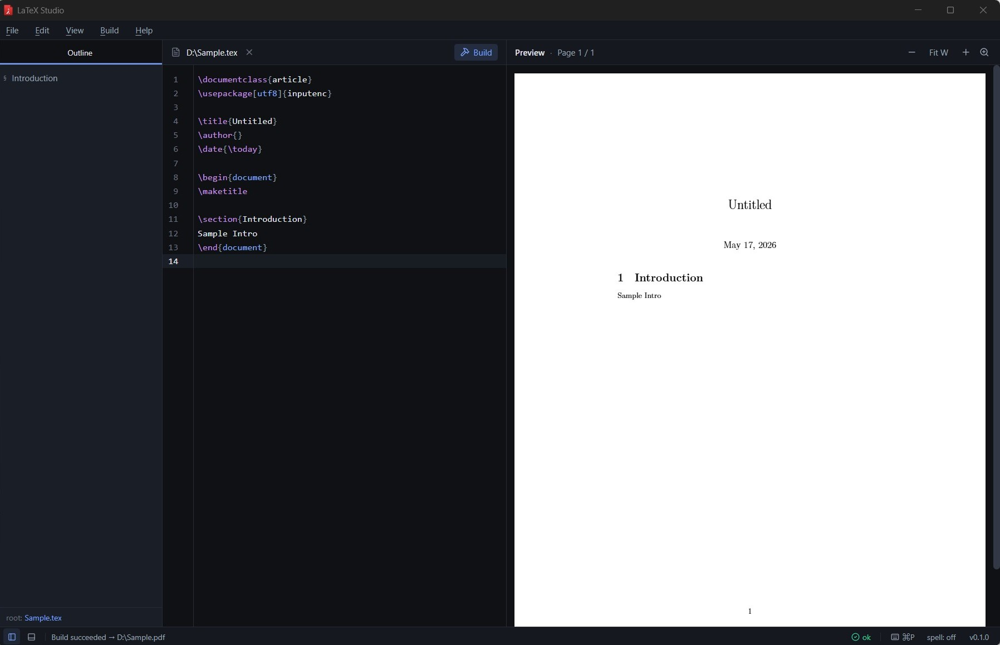

Modern CodeMirror 6 editor
Syntax highlighting, snippets, autocomplete, bracket matching, search, and LaTeX-aware editing built on the latest CodeMirror.
LaTeX Studio is a modern, native editor for writing and compiling LaTeX on Windows, macOS and Linux — with a built-in PDF preview, SyncTeX, outline view and one-click Tectonic install. Local-first, no accounts, no telemetry.
Free & open source · MIT licensed · No telemetry · Created by Bipul Raman

Features
Everything you need to draft, build and preview a LaTeX document — and nothing you don't. Designed to feel as fast and quiet as a text editor, with the power of a full build pipeline behind it.
Syntax highlighting, snippets, autocomplete, bracket matching, search, and LaTeX-aware editing built on the latest CodeMirror.
A native PDF.js viewer sits next to your source. Zoom, fit-width, page indicator — and the page reloads automatically after every build.
Jump from a position in the source to the matching PDF location and back. Ctrl+Alt+J jumps forward; shift-click in the PDF jumps back.
Parts, chapters, sections, beamer frame titles and custom CV-style sections appear in a navigable sidebar — click to jump.
No TeX install? Click Install Tectonic and we'll fetch the ~20 MB self-contained engine. latexmk, pdflatex, xelatex and lualatex are also supported.
Spellcheck respects LaTeX syntax (commands, math, comments) so it only flags real prose typos. Bring your own dictionary.
Ctrl+Shift+P opens a fuzzy palette over every action — build, open, switch engine, change theme, jump to file.
External edits to your source folder are picked up instantly. Builds can re-trigger on save so the PDF stays current as you write.
Your documents never leave your machine. No analytics, no accounts, no network calls — except when you ask for Tectonic.
Workflow
No project files, no configuration. Open a
.tex file or a folder and start writing.
Ctrl + O to open a single file, or Ctrl + Shift + O to open a folder. The sidebar appears only when there's something to show.
Press F5 to compile with your chosen engine. Errors and warnings appear inline with line numbers; the build is cancellable mid-run.
The PDF refreshes automatically. Ctrl + Alt + J jumps forward to the cursor; shift-click in the PDF jumps back to the source.
Why LaTeX Studio
Cloud editors are great for collaboration but slow, opinionated and tied to an account. Classic desktop editors are powerful but feel stuck in the 2000s. LaTeX Studio sits in the middle.
FAQ
No. On first launch, if no engine is found on your system, LaTeX Studio will prompt you to install Tectonic — a ~20 MB self-contained TeX engine that lives in the app data folder. If you prefer, you can install MiKTeX or TeX Live and pick latexmk / pdflatex / xelatex / lualatex from Build → Engine.
Right next to your .tex source —
along with the usual side files (.aux,
.log,
.synctex.gz). Easy to share, easy
to version-control.
Yes. LaTeX Studio is MIT-licensed open source. No paywall, no upgrade tier, no telemetry, no account. If you like it, star it on GitHub.
Windows 10 / 11 (x64), macOS 12+ on both Apple Silicon and
Intel, and modern Linux distributions (x86_64;
.deb and
.AppImage). All built automatically
by GitHub Actions from every tagged commit.
Open an issue on GitHub. PRs welcome.
Download
Pre-built binaries for Windows, macOS and Linux. Every release is built automatically from a tagged commit.
Source available under the MIT license on GitHub.